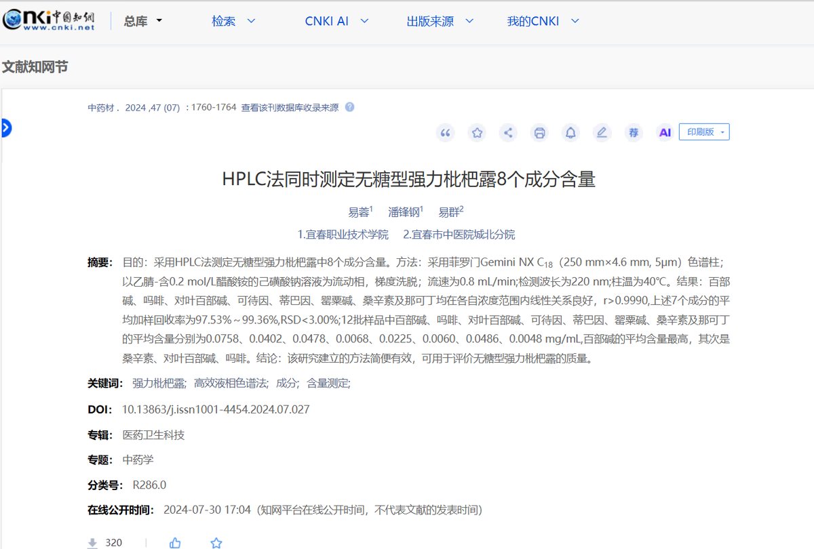

担麦人
@xccpma
@Bocchi_Kk1 复方甘草口服液180ml有大约20mg

可爱波奇大王💊
@Bocchi_Kk1
强力枇杷露或许是一个很好的阿片类药物(前提是能忍着恶心喝下去)，一项研究可以说明每100mL强力枇杷露有着4mg的吗啡，pdd上售价也很便宜，该研究检测了12批无糖型强力枇杷露样品，测得其吗啡的平均含量为0.0402 mg/mL
期刊：《中药材》2024年第47卷第7期 https://t.co/ROYph9d9aZ